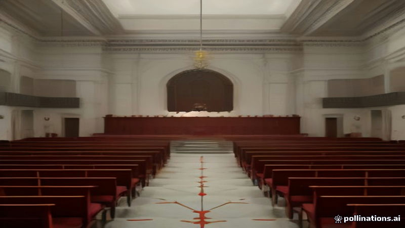

পারাগুয়ের প্রেসিডেন্ট সান্তিয়াগো পেনা ইম্পিচমেন্টের মুখে, ব্যাংক ধসের পর
Al Jazeera English, NPR World · 2026-11-06
AI-generated illustrationআইনসভা প্রেসিডেন্ট সান্তিয়াগো পেনার পদত্যাগের কয়েক মিনিট পরই ইম্পিচমেন্টের ভোট দিয়েছে, ডিজিটাল ব্যাংক ধস লক্ষ লক্ষ সঞ্চয় জমা জমাটবদ্ধ করেছে, আল জাজিরা ও এনপিআর জানায়।
পারাগুয়ের আইনসভা বৃহস্পতিবার প্রেসিডেন্ট সান্তিয়াগো পেনার পদত্যাগের কয়েক মিনিট পরই তাকে ইম্পিচমেন্টের জন্য ভোট দেয়, আল জাজিরা ইংলিশ ও এনপিআর ওয়ার্ল্ডের তথ্য অনুযায়ী।
এই পদক্ষেপটি সরকার সংযুক্ত একটি ডিজিটাল ব্যাংকের ধসের পর নেওয়া হয়েছে, যা লক্ষ লক্ষ নাগরিকের সঞ্চয় জমা জমাটবদ্ধ করেছে। আইনসভা বলছে, এই ব্যবস্থা আর্থিক সিস্টেমে আস্থা পুনরুদ্ধার এবং ব্যাংক ব্যর্থতার সঙ্গে যুক্ত অভিযোগ মোকাবিলার জন্য।
Written by AI from facts reported by the outlets named above. It may contain errors; check the original reporting.English version
Paraguay's President Santiago Peña Impeached After Resignation Amid Bank Collapse
Paraguayan lawmakers voted to impeach President Santiago Peña on Thursday, just minutes after he submitted his resignation, according to reports from Al Jazeera English and NPR World.
The impeachment follows a crisis triggered by the collapse of a digital bank linked to the government, which has frozen millions of Paraguayans' savings. Lawmakers said the move aims to restore confidence in the financial system and address alleged mismanagement tied to the bank's failure.